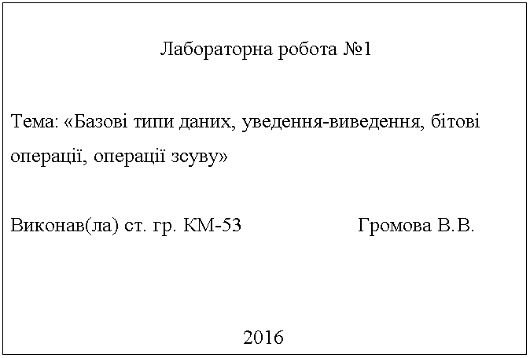

Додаток А. Рекомендації зі створення інтерфейсу¶
Обкладинка програми¶
Кожна програма повинна мати «обкладинку» вигляду, представленого на рисунку А.1. У кожній програмі потрібно вказати потрібні номер і тему роботи, групу, прізвище та ініціали студента, рік виконання роботи, вибрати правильну форму написання слова «виконав» залежно від статі студента.

Рисунок А.1 – Обкладинка програми
Маніпуляції з консолью вимагають підключення додаткових бібліотек, що залежать від вашої операційної системи. Для Windows це може бути conio.h чи windows.h. На Linux та інших Unix-подібних системах традиційно використовують бібліотеку ncurses.
Для кросплатформенної розробки можна використовувати бібліотеку pdcurses.
Для створення обкладинки потрібно:
Підключити бібліотеку
stdio.hта бібліотеку для маніпуляцій консолью.Очистити екран.
Для креслення рамки використайте символи з такими кодами ASCII:
218 (лівий верхній кут),
196 (горизонтальна лінія),
191 (правий верхній кут),
179 (вертикальна лінія),
192 (лівий нижній кут),
217 (правий нижній кут).
|
|
|
|
|
|
|
|
|
Використовуйте функцію
void gotoxy(int x, int y), яка поміщає курсор текстового екрана в точку з координатамих, у. (Стандартний розмір терміналу — 80 х 25.)Поставити очікування уведення будь-якого символу й вивести рядок, наприклад,
"Для завершення натисніть Enter".
Організація простого меню¶
Майже в усіх завданнях користувачу надають вибір із декількох варіантів. Наприклад, для демонстрації роботи програм можна використовувати випадкові числа, а можна — числа, уведені з клавіатури. Вибір користувача часто реалізують у вигляді меню. Просте меню виглядає так:
Виберіть один із варіантів:
1. Уведення чисел із клавіатури
2. Генерація випадкових чисел
3. Вихід із програми
Уведіть номер вибраного пункту:
Розгляньмо використання меню на наступному прикладі.
Приклад А.1¶
За трьома сторонами трикутника обчислити його площу.
#include <stdio.h>
#include <stdlib.h>
#include <time.h>
#include <math.h>
void clrscr(void)
{
system("cls||clear");
}
void draw_menu(void)
{
printf("Виберіть один із варіантів:\n");
printf("1. Уведення чисел із клавіатури\n");
printf("2. Генерація випадкових чисел\n");
printf("3. Вихід із програми\n");
printf("Уведіть номер вибраного пункту:\n");
}
void get_user_selection(char* ch)
{
scanf(" %c", ch);
while(getchar() != '\n'); // очищуємо буфер вводу
}
_Bool is_valid_input(char ch)
{
return ch == '1' || ch == '2' || ch == '3';
}
int main()
{
float a, b, c; /*сторони трикутника*/
float p; /*напівпериметр трикутника*/
float s; /*площа трикутника*/
clrscr();
/*нескінченний цикл*/
while(1) {
draw_menu();
char ch; /*обраний пункт меню*/
get_user_selection(&ch);
/*якщо увели неправильний параметр – знову меню*/
if (!is_valid_input(ch)) {
clrscr();
printf("Ви увели неправильний номер.\n\n");
continue;
}
switch (ch)
{
case '1': /*уведення з клавіатури*/
printf("Уведіть сторони трикутника:\n");
printf("a = ");
scanf("%f", &a);
printf("b = ");
scanf("%f", &b);
printf("c = ");
scanf("%f", &c);
break;
case '2': /*генерація випадкових значень*/
srand(time(NULL));
/*для згенерованих чисел виконується умова:
будь-яка зі сторін менша за суму двох інших*/
a = 6 + rand() % 5; //a = [6..10]
b = 6 + rand() % 5; //b = [6..10]
c = 6 + rand() % 5; //c = [6..10]
break;
case '3': /*вихід із програми*/
exit(0);
break;
}
p = (a + b + c) / 2;
s = sqrt(p * (p-a) * (p-b) * (p-c));
printf("Площа трикутника S = %f\n\n", s);
}
return 0;
}